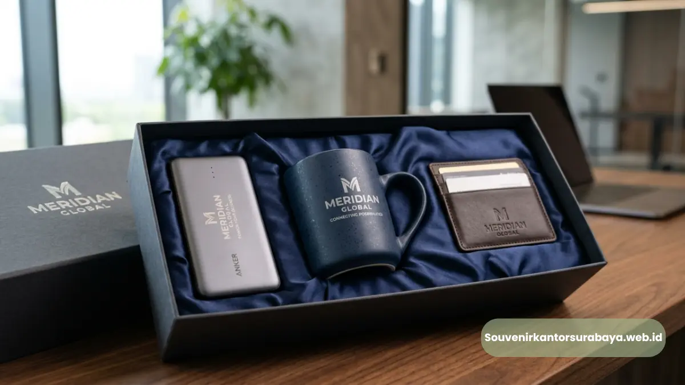
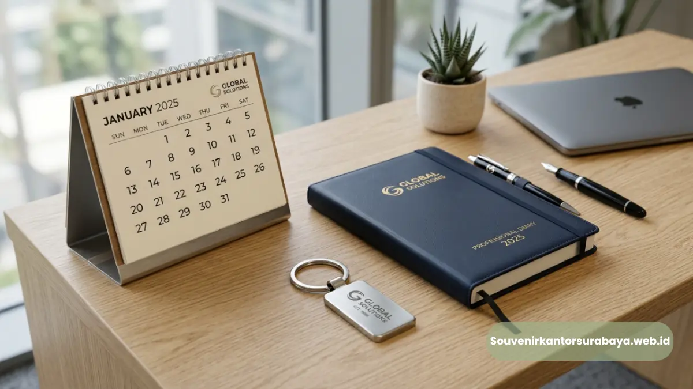
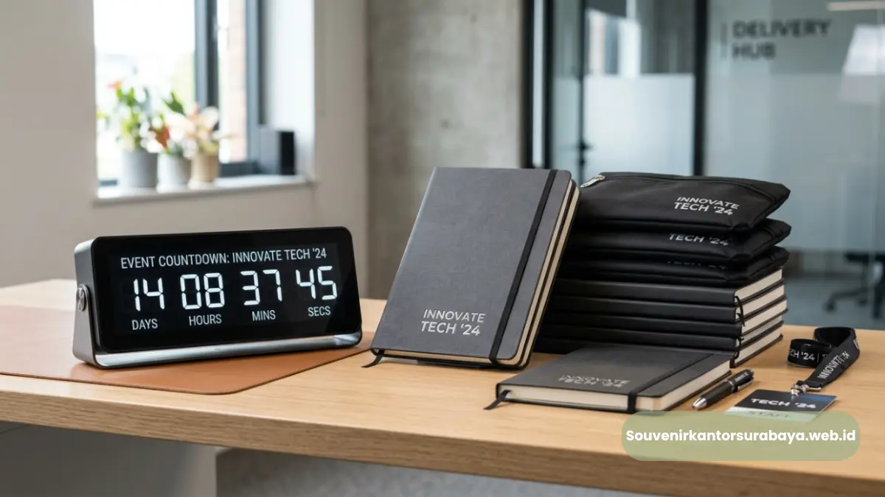

- Bagaimana Seminar Kit Perusahaan Mendukung Kebutuhan Acara?
- Apa Saja Isi Seminar Kit Perusahaan yang Relevan?
- Mengapa Seminar Kit Penting untuk Brand Identity Perusahaan?
- Model Seminar Kit Mana yang Sesuai untuk Setiap Kebutuhan?
- Bagaimana Menentukan Material Seminar Kit yang Tepat?
- Bagaimana Custom Logo dan Warna Korporat Diterapkan?
- Bagaimana Seminar Kit Digunakan dalam Konsep MICE?
- Bagaimana Menyusun Seminar Kit untuk Perusahaan di Surabaya?
- Apa yang Perlu Diperhatikan Sebelum Produksi?
- Mengapa Seminarkit ID Relevan untuk Kebutuhan Souvenir Perusahaan?
Seminar Kit Perusahaan untuk Acara Corporate
Seminar kit perusahaan adalah paket perlengkapan acara berlogo brand yang membantu peserta bekerja, belajar, dan mengenali identitas perusahaan secara konsisten.
- Seminar kit perusahaan dapat disusun sesuai kebutuhan seminar, meeting, pelatihan, atau event korporat.
- Isi paket dapat berupa tas seminar, notebook, pulpen, flashdisk, ID card, dan perlengkapan pendukung lainnya.
- Custom logo dan warna brand membuat perlengkapan acara sekaligus berfungsi sebagai media pengenalan perusahaan.
- Pemilihan isi sebaiknya mengikuti jenis acara, profil peserta, durasi kegiatan, dan kebutuhan penggunaan setelah acara.
- Seminarkit ID menyediakan solusi souvenir dan perlengkapan acara yang dapat disesuaikan dengan kebutuhan perusahaan.
Bagaimana Seminar Kit Perusahaan Mendukung Kebutuhan Acara?
Seminar kit perusahaan menggabungkan perlengkapan acara dan identitas brand dalam satu paket praktis yang sesuai untuk kebutuhan peserta dan penyelenggara.
Seminar kit perusahaan pada dasarnya merupakan paket perlengkapan yang diberikan kepada peserta sebuah kegiatan perusahaan. Paket tersebut dapat digunakan dalam seminar, workshop, training, meeting corporate, konferensi, gathering, hingga kegiatan yang berkaitan dengan konsep MICE.
Bagi perusahaan, seminar kit bukan sekadar kumpulan barang. Setiap item dapat menjalankan fungsi tertentu selama acara sekaligus membawa identitas visual perusahaan. Logo, warna korporat, nama kegiatan, atau pesan tertentu dapat diaplikasikan pada produk sesuai kebutuhan branding.
Dalam praktiknya, HRD dapat menggunakan seminar kit untuk program pelatihan karyawan. Divisi marketing dapat memanfaatkannya untuk seminar pelanggan atau partner. Sementara procurement dan event organizer dapat menggunakannya sebagai bagian dari kebutuhan pengadaan merchandise acara.
Kebutuhan setiap acara tentu berbeda. Seminar satu hari untuk puluhan peserta membutuhkan komposisi yang berbeda dengan pelatihan internal perusahaan selama beberapa hari. Karena itu, isi seminar kit perusahaan sebaiknya tidak ditentukan hanya berdasarkan jumlah item, tetapi berdasarkan fungsi dan profil penerima.
Apa Saja Isi Seminar Kit Perusahaan yang Relevan?
Isi seminar kit perusahaan dapat terdiri dari tas seminar, notebook, pulpen, flashdisk, ID card, dan perlengkapan lain sesuai kebutuhan acara.
Tidak ada satu komposisi yang wajib digunakan untuk semua kegiatan. Perusahaan dapat menyusun paket berdasarkan tujuan acara dan kebutuhan peserta.
Tas Seminar
Tas seminar berfungsi sebagai wadah perlengkapan sekaligus media branding. Model tote bag, pouch, sling bag, atau tas kerja dapat dipertimbangkan berdasarkan karakter acara.
Notebook Seminar
Notebook seminar berguna untuk mencatat materi, agenda, hasil diskusi, atau informasi penting selama kegiatan. Logo perusahaan dapat ditempatkan pada cover sehingga identitas brand terlihat sepanjang acara.
Paket Alat Tulis Seminar
Paket alat tulis seminar umumnya berisi pulpen dan perlengkapan pencatatan. Komposisi dapat disesuaikan dengan kebutuhan acara.
Flashdisk Custom
Flashdisk custom logo perusahaan dapat digunakan untuk seminar yang membutuhkan distribusi materi digital. File presentasi, modul, katalog, atau dokumen pendukung dapat diberikan secara digital sesuai kebutuhan acara.
Goodie Bag Pelatihan
Goodie bag pelatihan dapat menggabungkan beberapa perlengkapan dalam satu paket. Isi dapat disesuaikan dengan jenis pelatihan, jumlah peserta, dan kebutuhan perusahaan.
Mengapa Seminar Kit Penting untuk Brand Identity Perusahaan?
Seminar kit memperkuat brand identity melalui penggunaan logo, warna, desain, dan perlengkapan yang konsisten selama interaksi perusahaan dengan peserta.
Brand identity tidak hanya terlihat pada logo perusahaan. Identitas visual juga dapat hadir melalui warna, bentuk, desain, kemasan, dan berbagai material komunikasi.
Seminar kit memberikan ruang untuk menerapkan elemen tersebut pada benda yang benar-benar digunakan peserta. Ketika notebook, tas, pulpen, dan perlengkapan lain memiliki tampilan yang konsisten, keseluruhan acara terlihat lebih terorganisasi.
- Meningkatkan Konsistensi Visual Acara: Seminar kit dapat dibuat dengan pendekatan desain yang sama dengan backdrop, ID card, materi presentasi, dan kebutuhan event lainnya.
- Mendukung Pengalaman Peserta: Perlengkapan yang relevan membantu peserta mengikuti kegiatan dengan lebih praktis. Notebook membantu pencatatan, tas menyimpan perlengkapan, sedangkan flashdisk dapat digunakan untuk kebutuhan digital.
- Memperpanjang Eksposur Brand: Barang yang masih digunakan setelah acara dapat memberikan eksposur brand dalam jangka lebih panjang.
- Memperkuat Identitas Acara: Seminar kit juga dapat menjadi bagian dari tema kegiatan. Warna dan desain dapat disesuaikan dengan kampanye perusahaan, program pelatihan, peluncuran produk, atau agenda internal.
Model Seminar Kit Mana yang Sesuai untuk Setiap Kebutuhan?
Model seminar kit dapat disesuaikan berdasarkan format acara, profil peserta, kebutuhan penggunaan, dan tingkat personalisasi logo perusahaan.
- Seminar Kit Basic: Seminar kit basic cocok untuk kegiatan dengan kebutuhan perlengkapan sederhana. Paket dapat terdiri dari tas, notebook, dan pulpen.
- Seminar Kit Executive: Seminar kit executive dapat menggunakan produk dengan tampilan lebih formal dan material yang terasa lebih premium.
- Seminar Kit Digital: Seminar kit digital mengutamakan perlengkapan yang berkaitan dengan teknologi. Flashdisk custom logo dapat menjadi salah satu komponen utama.
- Seminar Kit Training: Seminar kit training dapat dirancang untuk kebutuhan peserta pelatihan. Notebook, alat tulis, tas, ID card, dan materi pendukung dapat ditempatkan dalam satu paket.
Bagaimana Menentukan Material Seminar Kit yang Tepat?
Material seminar kit perlu dipilih berdasarkan intensitas penggunaan, karakter acara, tampilan brand, kebutuhan peserta, dan anggaran pengadaan perusahaan.
Material memengaruhi tampilan, daya tahan, dan pengalaman ketika produk digunakan. Tas berbahan kain dapat memberikan kesan kasual dan praktis, sedangkan material dengan struktur lebih kokoh dapat memberikan kesan formal.
Notebook juga memiliki berbagai pilihan cover dan finishing. Perusahaan dapat mempertimbangkan apakah produk digunakan untuk acara singkat atau diharapkan menjadi perlengkapan kerja setelah acara.
Pada produk custom, area pencetakan logo juga penting. Ukuran logo perlu disesuaikan dengan bidang produk agar tetap mudah dibaca tanpa mengganggu desain.
Untuk kebutuhan corporate gifting, perusahaan sebaiknya mempertimbangkan keseimbangan antara tampilan visual dan fungsi.
Bagaimana Custom Logo dan Warna Korporat Diterapkan?
Custom logo seminar kit dapat menggunakan logo, warna korporat, nama acara, atau elemen desain brand dengan ukuran dan posisi yang proporsional.
Logo sebaiknya ditempatkan pada area yang mudah terlihat. Namun, penggunaan logo tidak berarti seluruh permukaan produk harus dipenuhi identitas perusahaan.
Pendekatan yang lebih profesional adalah mempertahankan ruang visual yang cukup. Warna produk dapat mengikuti warna brand atau menggunakan warna netral yang tetap harmonis dengan identitas perusahaan.
Untuk paket yang terdiri dari beberapa produk, desain sebaiknya dibuat konsisten. Logo pada tas, notebook, dan pulpen dapat menggunakan pendekatan visual yang sama. Perusahaan juga dapat mempertimbangkan penggunaan nama acara atau tahun kegiatan.

Bagaimana Seminar Kit Digunakan dalam Konsep MICE?
Seminar kit mendukung konsep MICE dengan menyediakan perlengkapan peserta yang praktis sekaligus menjaga identitas perusahaan dalam berbagai kegiatan bisnis.
Konsep MICE mencakup kegiatan meeting, incentive, convention, dan exhibition. Kebutuhan merchandise pada setiap kegiatan dapat berbeda.
Pada meeting corporate, perlengkapan yang terlihat profesional dan mendukung pencatatan dapat lebih relevan. Pada convention, perusahaan mungkin membutuhkan paket yang mudah dibagikan kepada peserta dalam jumlah besar.
Pada exhibition, produk dengan identitas brand yang kuat dapat digunakan sebagai merchandise untuk pengunjung atau partner bisnis. Sementara kegiatan training membutuhkan perlengkapan yang membantu peserta mengikuti materi.
Bagaimana Menyusun Seminar Kit untuk Perusahaan di Surabaya?
Seminar kit perusahaan untuk perusahaan di Surabaya dapat disusun berdasarkan format acara, jumlah peserta, kebutuhan branding, dan perlengkapan yang digunakan selama kegiatan.
Melayani pemesanan souvenir untuk kebutuhan perusahaan di Surabaya, seminar kit dapat disesuaikan untuk seminar, training, meeting corporate, gathering, dan event korporat.
Contohnya, perusahaan yang mengadakan pelatihan internal dapat menggunakan tas seminar, notebook, pulpen, dan flashdisk. Untuk seminar eksternal, komposisi dapat dibuat lebih representatif dengan tambahan merchandise yang sesuai karakter peserta.
Informasi seperti jumlah peserta, jenis kegiatan, kebutuhan custom logo, serta jenis perlengkapan yang dibutuhkan menjadi dasar untuk menentukan komposisi paket.
Data Google Search Console yang disertakan dalam brief menunjukkan halaman prioritas terkait memiliki 81 impresi dengan posisi rata-rata 71,15 dan 0 klik pada periode data yang digunakan. Angka tersebut menunjukkan adanya visibilitas pencarian yang masih membutuhkan peningkatan relevansi dan daya tarik halaman.
Apa yang Perlu Diperhatikan Sebelum Produksi?
Produksi seminar kit perlu memperhatikan jumlah peserta, spesifikasi produk, desain logo, komposisi paket, dan kebutuhan distribusi agar hasil sesuai kebutuhan acara.
Jumlah peserta menjadi dasar pengadaan, tetapi perusahaan juga perlu memperhitungkan kebutuhan cadangan apabila diperlukan.
Spesifikasi setiap produk sebaiknya ditentukan sejak awal. Tas perlu memiliki ukuran yang sesuai, notebook perlu disesuaikan dengan kebutuhan pencatatan, dan flashdisk perlu ditentukan berdasarkan kebutuhan penyimpanan yang diperlukan.
Desain logo juga sebaiknya sudah final sebelum produksi. Perubahan desain setelah proses produksi berjalan dapat memengaruhi jadwal dan hasil akhir.
Untuk acara perusahaan, penyusunan paket juga perlu memperhatikan distribusi. Produk yang sudah dikemas dalam satu paket akan lebih mudah dibagikan kepada peserta.
Mengapa Seminarkit ID Relevan untuk Kebutuhan Souvenir Perusahaan?
Seminarkit ID menyediakan solusi seminar kit dan merchandise perusahaan dengan pilihan produk yang dapat disesuaikan untuk berbagai kebutuhan acara korporat.
Seminarkit ID dapat menjadi bagian dari proses perencanaan merchandise perusahaan, mulai dari menentukan komposisi produk hingga menyesuaikan kebutuhan custom branding.
Pilihan produk dapat diarahkan berdasarkan karakter kegiatan. Seminar membutuhkan paket yang praktis, training membutuhkan perlengkapan fungsional, sedangkan corporate gifting dapat membutuhkan produk dengan tampilan yang lebih representatif.
Perusahaan juga dapat menggabungkan produk fisik dan teknologi. Flashdisk custom dapat ditempatkan bersama notebook dan tas dalam satu paket yang memiliki fungsi selama acara maupun setelah acara.
Siapkan Seminar Kit untuk Acara Perusahaan
Seminarkit ID membantu perusahaan menyiapkan seminar kit berlogo yang disesuaikan dengan kebutuhan acara, peserta, identitas brand, dan komposisi merchandise.
Jika perusahaan sedang menyiapkan seminar, training, meeting corporate, gathering, atau event korporat, kebutuhan perlengkapan dapat disusun menjadi satu paket yang lebih terarah.
Jelajahi pilihan seminar kit perusahaan di Seminarkit ID dan sampaikan kebutuhan jumlah peserta, jenis acara, serta konsep branding yang ingin digunakan. Tim Seminarkit ID dapat membantu mengarahkan komposisi produk yang sesuai untuk kebutuhan souvenir dan perlengkapan perusahaan.

Hawa Nadira
Tim penulis CorporateGifts ID berfokus pada strategi souvenir kantor, merchandise korporat, dan inovasi brand untuk klien B2B.
Keahlian: Branding perusahaan, produksi souvenir, paket event, desain materi promosi.
Artikel Terkait
Souvenir Kantor Custom Logo Surabaya untuk Memperkuat Identitas Brand
Custom logo pada souvenir kantor menjadi salah satu cara paling efektif untuk memperluas eksposur brand secara berkelanjutan.
Baca Selengkapnya
Manfaat Pulpen Parker Ukir Nama Perusahaan untuk Branding Korporat
Memberikan pulpen Parker ukir nama perusahaan sebagai merchandise eksklusif memiliki dampak positif bagi brand image.
Baca Selengkapnya
Seminar Kit Surabaya Custom Logo untuk Branding Perusahaan
Seminar kit dengan cetak custom logo menjadi salah satu strategi branding pasif yang sangat efisien.
Baca Selengkapnya